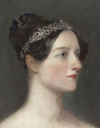

Portrait of Ada Lovelace
Visionary of the Computer Age
Augusta Ada King, Countess of Lovelace (née Byron; 10 December 1815 - 27 November 1852) was an English mathematician and writer, chiefly known for her groundbreaking work on Charles Babbage's proposed mechanical general-purpose computer, the Analytical Engine.
Ada Lovelace's legacy as the first computer programmer continues to inspire generations of innovators and serves as a beacon for women in STEM fields.
"The Analytical Engine weaves algebraic patterns, just as the Jacquard loom weaves flowers and leaves."
- Ada Lovelace
Key Contributions
- Wrote the world's first algorithm designed to be processed by a machine, earning her the title of the first computer programmer.
- Recognized the full potential of computing machines beyond mere calculations, envisioning their capacity to manipulate symbols and create music.
- Contributed significantly to the early development of computer science through her extensive notes on the Analytical Engine.
- Bridged the worlds of science and art, drawing inspiration from both her mathematician mother and her poet father, Lord Byron.
- Inspired generations of women to pursue careers in STEM fields, becoming an icon for gender equality in science and technology.
Learn More
To learn more about Ada Lovelace and her contributions to computer science, visit her Wikipedia page.